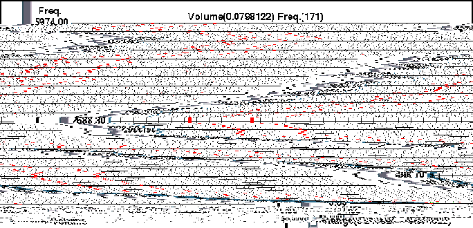

MeshView Module Help
Contents
Introduction
Creating a map
Interface
Picking an element
Histogram
Introduction
MeshView is a graphical analysis tool for displaying, analyzing and
editing 3D unstructured tetrahedral meshes. It is designed to allow
users to visually verify the integrity of a mesh. There are two
separate approaches we take to the problem. The first provides for
manipulations of the mesh, allowing the user to verify the overall
structure of the mesh. There are three techniques that we provide: a
growth algorithm, clipping isosurfaces, and multiple views. For the
growth algorithm, the user picks a starting tetrahedron, and then can
grow the mesh out, level by level, where a level is defined by all
those elements that share a face with an element on the previous
level. With the clipping isosurfaces, unlike traditional clipping
planes, if the plane goes through an element, than the entire element
is discarded, instead of drawing partial elements. Lastly, the user
can have several different views of the mesh, with an orientation
window to show how the views are with respect to each other.
The second approach is to look at quantitative measures of the mesh, like
volume, aspect ratio, and error. To study these, we provide an interactive
histogram that displays number of elements per value. The user can then move
two bars to specify a range of values, and all the elements within that range
are displayed.
To accommodate the user's need for fixing problem areas once they are
found, we also provide several editing options. The user can add a
node in the center of an existing element, thereby subdividing that
element, or she can delete either the four vertices of an element or
a single vertex.
Creating a map
Like all modules in the SCIRun environment, the MeshView needs to
hooked up with various other modules to create a working map. The
following is a general use map for using the MeshView program.

The MeshView module has four ports, two input and two output. The two
input ports are for (a) a mesh and (b)
a colormap, and the two output ports are for (c)
a geometry viewer and (d) a mesh writer. Ports
a and c are required. The mesh input
can be from a variety of modules, however. The simplest is just a MeshReader which reads
in a pre-existing mesh. Other modules could be a Delaunay module which creates a mesh given
a point set. The geometry viewer, Salmon, is also necessary
for viewing the mesh while interacting with it. The colormap module,
GenColormap,
is for defining the colormap used when viewing the quantitative
measures. Finally, port d is for writing the mesh
to disk after it has been edited. There are two different modules
that can be used,
MeshWriter which writes a mesh in the SCIRun format, or TetraWriter which
writes a conventional point file and tetra file. NOTE: the output
mesh module should not be used until all editing is complete, to save
time by not having the mesh written every time there is a change.
Interface
MeshView is controlled through its user-interface, as shown below.

The MeshView interface is divided into 7 different sections.
Section A
The first section lets the user specify which technique she wants to
do, either manipulative, quantifying, or editing. Only one technique
can be used at a time.
Section B
The second section allows the user to specify
whether the geometry should be rendered in ``production'' or
``normal'' mode. In production mode, the mesh
is rendered with cylinders that are suitable for using as final
images. Normal mode renders the mesh as either a wireframe or Gouraud
shaded. For the production mode, there is a slider that lets the user
set the width of the cylinders.

A mesh rendered in: a) normal mode and b) production mode.
Section C
The third section contains the buttons and sliders for the
manipulative techniques. The first slider is for setting how many
levels the user wants to look at. Following that is the switch to
indicate whether the user wants to look at all of the levels up to the
specified level or only the outermost level. Due to the way the
program only sends surface faces to the renderer, there needs to be a
way for the user to see the entire mesh when she changes to wireframe
mode. Therefore, the third button provides the user with the
capability to flip between rendering the entire volume, and rendering
the surface only. This switch is only useful when rendering in
wireframe mode. The next three sliders are for manipulating the
clipping isosurfaces. These sliders permit the user to make a ``cube''
of clipping isosurfaces and thus able to clip from any orthogonal
surface.
Section D
The next section is for the quantitative measures. There are two
different ways of displaying the elements that fall into the desired
range: either only the elements in the range will be displayed, or
those elements will be displayed with the rest of the mesh drawn in
wireframe. The first switch allows the user to toggle between these
two options. The second switch is for indicating whether the user
wants to see the elements that are inside of the range or outside of
the range. Choosing the elements outside of the range displays both
the largest and smallest valued elements at the same time. The last
four buttons are for selecting a measure, either volume, aspect ratio,
size versus neighbor, or error.
Section E
The editing capabilities comprise the fifth section. There are three
editing options: adding a node, deleting an element and its four node,
or deleting the node nearest to the cross-hair picker. The element to
be edited is selected by moving the cross-hair picker into the desired
element.
Section F
The sixth section is a switch for indicating whether the
user is using the cross-hair picker to select a new seed element or an
element to be editted.
Section G
The last section shows information about the mesh, including the
number of nodes, number of elements, and quantitative information
about both the seed element and the element selected for editing.
Picking an element
There are two techniques in the MeshView program that require picking an
element in space. To accomplish this, a 3D Crosshair Widget is
used. Briefly, to select an element, you hold down the SHIFT key and then
use the left mouse button to select and move the widget. The selected
element is the one which contains the center sphere of the widget.
 Example of the crosshair widget inside of an element.
Example of the crosshair widget inside of an element.
Histogram
The interactive histogram allows the user to specify a range of values
to indicate which elements should be displayed.

The two red bars on the histogram are movable and define the range.
The lower lefthand corner displays what the range is numerically,
making it easy to get an accurate range.

SCI Research Group
Computer Science
Department Research